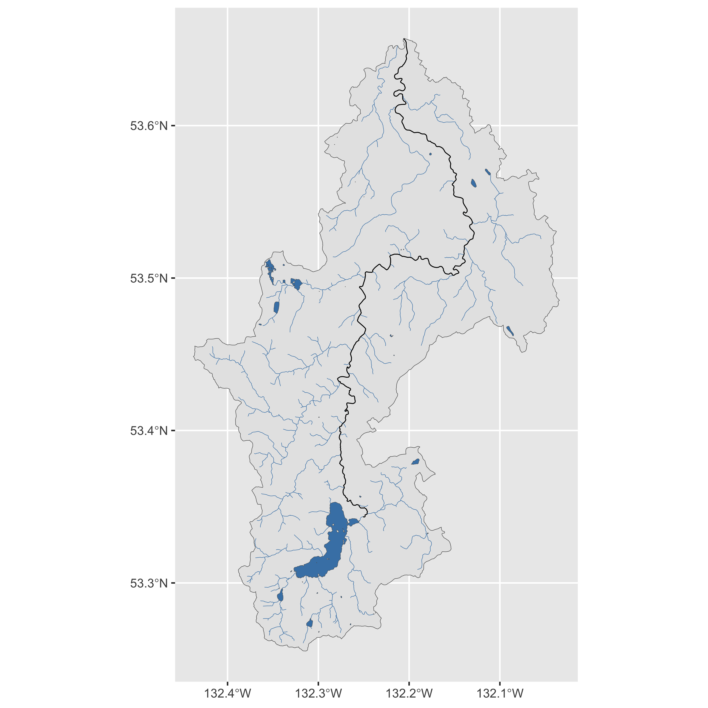

The fwapgr package is used to retrieve data from the BC Freshwater Atlas. In this article, we’ll get stream, lake, and watershed data to create a map of the Yakoun River watershed in Haida Gwaii, BC.
We can get started by looking at all available layers and which columns are in a specific layer.
fwapgr::fwa_list_layers() #> # A tibble: 30 x 7 #> f_table_catalog f_table_schema f_table_name f_geometry_colu… coord_dimension #> <chr> <chr> <chr> <chr> <int> #> 1 postgis hydrosheds hybas_lev12… geom 2 #> 2 postgis whse_basemapp… fwa_streams… geom 4 #> 3 postgis whse_fish fiss_fish_o… geom 2 #> 4 postgis usgs wbdhu12 geom 2 #> 5 postgis whse_basemapp… fwa_waterbo… geom 4 #> 6 postgis whse_basemapp… fwa_stream_… geom 4 #> 7 postgis whse_basemapp… fwa_watersh… geom 2 #> 8 postgis whse_basemapp… fwa_watersh… geom 2 #> 9 postgis whse_fish fiss_fish_o… geom 2 #> 10 postgis whse_basemapp… fwa_waterbo… geom 4 #> # … with 20 more rows, and 2 more variables: srid <int>, type <chr>
fwapgr::fwa_list_columns('fwa_stream_networks_sp') #> # A tibble: 27 x 2 #> field_name field_type #> <chr> <chr> #> 1 linear_feature_id int8 #> 2 watershed_group_id int8 #> 3 edge_type int8 #> 4 blue_line_key int8 #> 5 watershed_key int8 #> 6 fwa_watershed_code varchar #> 7 local_watershed_code varchar #> 8 watershed_group_code varchar #> 9 downstream_route_measure float8 #> 10 length_metre float8 #> # … with 17 more rows
fwa_feature is the workhorse function of fwapgr, allowing us to retrieve data from any available layer in the database and filter using a SQL WHERE statement. To get a linestring feature of the Yakoun river, we could use the ‘fwa_stream_networks_sp’ or ‘fwa_named_streams’ layers and filter by gnis_name column.
fwapgr::fwa_feature("fwa_stream_networks_sp", filter = "gnis_name = 'Yakoun River'", columns = "blue_line_key")
However, for this specific case we can use the convenience function fwa_gnis_streams. We can ensure that we have a valid ‘gnis_name’ using fwa_search_gnis_streams and we use the columns argument to get the blue_line_key column along with the geometry.
print(fwapgr::fwa_search_gnis_streams("yakoun")) #> [1] "Yakoun River" yakoun <- fwapgr::fwa_gnis_streams("Yakoun River", columns = "blue_line_key") yakoun #> Simple feature collection with 129 features and 1 field #> geometry type: LINESTRING #> dimension: XYZ #> bbox: xmin: -132.2789 ymin: 53.34324 xmax: -132.1283 ymax: 53.65705 #> z_range: zmin: 1 zmax: 99 #> CRS: 4326 #> First 10 features: #> blue_line_key geometry #> 1 360881586 LINESTRING Z (-132.2658 53.... #> 2 360881586 LINESTRING Z (-132.14 53.51... #> 3 360881586 LINESTRING Z (-132.2742 53.... #> 4 360881586 LINESTRING Z (-132.1965 53.... #> 5 360881586 LINESTRING Z (-132.2088 53.... #> 6 360881586 LINESTRING Z (-132.253 53.4... #> 7 360881586 LINESTRING Z (-132.204 53.6... #> 8 360881586 LINESTRING Z (-132.2483 53.... #> 9 360881586 LINESTRING Z (-132.2727 53.... #> 10 360881586 LINESTRING Z (-132.2687 53....
Next let’s get the Yakoun River watershed with fwa_watershed, which requires a blue_line_key.
blue_line_key <- unique(yakoun$blue_line_key) wshed <- fwapgr::fwa_watershed(blue_line_key)
We can use the ‘fwa_lakes_poly’ layer to get lake data and use the bounds argument to only retrieve lakes within the bounding box of the watershed.
bbox <- sf::st_bbox(wshed) lakes <- fwapgr::fwa_feature("fwa_lakes_poly", bounds = bbox)
Finally, lets get all streams within the watershed bounds that have a ‘stream_order’ less than 3.
streams <- fwapgr::fwa_feature("fwa_stream_networks_sp", filter = "stream_order < 3", bounds = bbox)
To make the map look a little prettier, we can clip the stream and lake layers to the watershed polygon.
streams <- sf::st_intersection(streams, wshed) lakes <- sf::st_intersection(lakes, wshed)
ggplot2::ggplot(data = yakoun) + ggplot2::geom_sf(data = wshed, lwd = 0.15) + ggplot2::geom_sf(data = streams, lwd = 0.15, colour = 'steelblue') + ggplot2::geom_sf(lwd = 0.3) + ggplot2::geom_sf(data = lakes, fill = "steelblue", lwd = 0.1)
